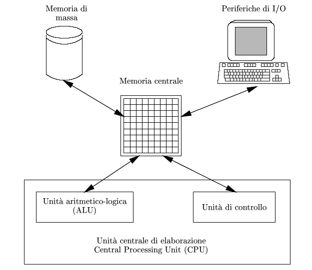

Computer science introduction
Lesson 3
Overview
- Basic algorythms & Control flow structures
- Data structures
- Big O & Complexity analysis
- Object Oriented Programming
- Parallelism & Concurrency
Computer science
the systematic study of the feasibility, structure, expression, and mechanization of the methodical procedures (or algorithms) that underlie the acquisition, representation, processing, storage, communication of, and access to information
Information
All the information about any computable problem can be represented using only 0 and 1
Great Insights of Computer Science #1
Algorithm
al-Khwārizmī - 825 AD
A set of rules that precisely defines a sequence of operations
Entscheidungsproblem
Hilbert - 1928
Problema della decisione
esiste sempre, almeno in linea di principio, un metodo meccanico (cioè una maniera rigorosa) attraverso cui, dato un qualsiasi enunciato matematico, si possa stabilire se esso sia vero o falso?
Macchina di Turing
1936
There are only five actions that a computer has to perform in order to do "anything"
Great Insights of Computer Science #2
Architettura di von Neumann
1945

Algorithm
Logic written in software by software developers to produce output from given input
- atomicità
- non ambiguità
- finitezza
- terminazione
- effettività
Classi di algoritmi
- ordinamento
- ricerca
- sequenziale
- binaria
- codifica
- compressione
- evolutivi
Diagramma di flusso
- Terminal
- Flow lines
- Input / Output
- Decision
- Process
Programmazione strutturata
'70
Problema dello spaghetti code (GOTO is bad!)
- Strutture di controllo:
- Servono a specificare se, quando, in quale ordine e quante volte devono essere eseguite le istruzioni
- Tutte le strutture di controllo possono essere annidate tra loro
Teorema di Jacopini-Böhm
1966
Qualunque algoritmo può essere implementato utilizzando tre sole strutture di controllo
Great Insights of Computer Science #3
- Sequenza
- Selezione
- Iterazione
Selezione
- if-then(-else)
- ternary/elvis operator
- switch
Selezione
if-then-else

Selezione
if-then-else
if (5 & 6 = 4) {
echo "magia!";
}
if (window.width > 800) {
alert("che grande!");
}
else if (window.height > 600) {
alert("che lungo!");
}
else {
alert("il freddo..");
}
Selezione
ternary/elvis operator
PHP / Javascript
echo "Good " . date('H') > 17 ? 'Evening' : 'Day';
PHP >= 5.3
$page = $_GET["page"] ?: 1;
Selezione
switch

Selezione
switch
PHP
switch ($stagione) {
case "estate":
echo "Si schiatta di caldo!";
break;
case "inverno":
echo "Si schiatta di freddo!";
break;
case "autunno":
echo "Cadono le foglie..";
break;
case "primavera":
echo "Fioriscono i fiori..";
break;
default:
echo "Sarà una mezza stagione";
}
Selezione
switch
Javascript
var text = "";
switch (new Date().getDay()) {
case 5:
text += "sta arrivando "
case 6:
case 0:
text += "il weekend!";
break;
default:
text = "che giorno dimmerda.";
}
Iterazione
- for
- while-do
- do-while
- foreach
Iterazione
for
Iterazione
for
for ($x = 10; $x >= 0; $--) {
echo "Countdown: $x";
}
for (i = 0; i < 100000000; i++) {
alert('Ti ucciderò a colpi di popup');
}
Iterazione
while-do
Iterazione
while-do
$x = 1;
while($x < 5) {
echo "The number is: $x";
$x++;
}
var i = 10;
while (i < 5) {
text += "The number is " + i;
i++;
}
Iterazione
do-while
Iterazione
do-while
$x = 1;
do {
echo "The number is: $x";
$x++;
} while ($x < 5);
var i = 10;
do {
text += "The number is " + i;
$x++;
} while (i < 5);
Iterazione
foreach
"do this to everything in this set"
foreach loop

Iterazione
foreach
$starring = array('Fabio' => 'Di Ninno', 'Mattia' => 'Carretto', 'Oskar' => 'Marcignàc');
foreach($starring as $nome => $cognome) {
echo $nome . " anche detto " . $cognome;
}
var person = {first_name:"John", last_name:"Doe", age:25};
for (x in person) {
console.log(x + ": " + person[x]);
}
Loop control
continue;skip the rest and continue with the next iterationbreak;early exit (come switch)- posso indicare anche quanti livelli di annidamento
Strutture non-locali
Permettono al flusso di esecuzione di tornare ad un punto precedente (stato dell'esecuzione)
- PHP e Javascript supportano
- Eccezioni
- Generatori
Strutture non-locali
Exceptions
try {
// Block of code to try
}
catch(err) {
// Block of code to handle errors
}
finally {
// Block of code to be executed regardless of the result
// PHP >=5.5
}
Strutture non-locali
Generators
PHP >= 5.5
function fibonacci() {
$last = 0;
$current = 1;
yield 1;
while (true) {
$current = $last + $current;
$last = $current - $last;
yield $current;
}
}
foreach (fibonacci() as $number) {
echo $number, "\n";
}
Strutture non-locali
Generators
Javascript
function* idMaker(){
var index = 0;
while(true) {
yield index++;
}
}
var gen = idMaker();
console.log(gen.next().value); // 0
console.log(gen.next().value); // 1
console.log(gen.next().value); // 2
/